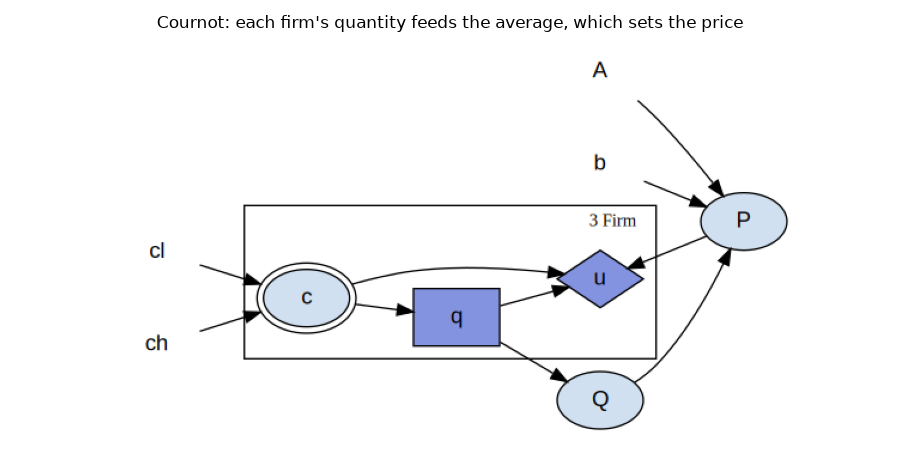
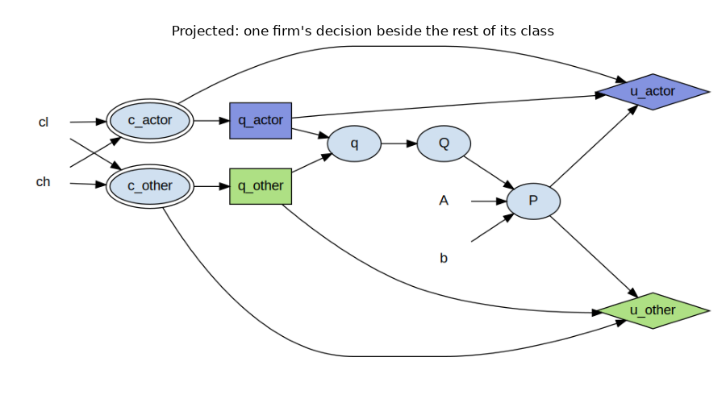

Note
Go to the end to download the full example code.
Cournot: Solving for a Nash Equilibrium¶
Several firms each choose how much to produce. The market price falls with the average quantity supplied, so a firm’s best output depends on what the other firms choose, and their best outputs depend in turn on its choice.
Some games can be solved by decomposing them: their decisions fall into an order, and each one can be settled once the decisions it relies on have been settled. This game admits no such order, because there is no decision here that can be settled first. What it has instead is a fixed point, a quantity that is its own best response; that quantity is the Cournot-Nash equilibrium.
This page does four things:
states the model and the three quantities worth knowing about it,
projects the population onto one firm and its rivals,
iterates best responses to the equilibrium, and
shows why the iteration has to be damped, by watching it fail without it.
The Model¶
Cournot (1838) [1] describes \(N\) firms selling one identical good. Each firm draws a marginal cost and chooses a quantity, the quantities together determine the price, and each firm is paid at that common price.
Notation¶
Shock: \(c_i\), firm \(i\)’s marginal cost, drawn uniformly on \([c_l, c_h]\). The calibration used below gives every firm the same cost \(c\), which is what makes the equilibrium symmetric.
Control: \(q_i\), firm \(i\)’s quantity, the one decision it makes.
Aggregate: \(Q\), the average quantity. It is the only quantity that leaves the firm class, and it is what couples the firms to each other.
Price: \(P\), set by inverse demand from \(Q\).
Payoff: \(u_i\), firm \(i\)’s profit.
Demand is written against the average rather than the total, so \(b\) is the slope on the average and \(b/N\) is the slope on total quantity. Both readings of \(N\) then live in one model: it is the size of the population and it is a parameter of demand, and neither reading needs an extra equation.
The model is static, since it has no arrival states, so solving it describes one play of a one-shot game.
The best response¶
Firm \(i\) takes the other firms’ quantities as given. Writing \(\bar q\) for the quantity each of the other \(N - 1\) firms produces, its profit is
which is concave in \(q_i\), so the first-order condition
gives the best response
The slope of that line in \(\bar q\) is \(-(N-1)/2\). It is the single most important number on this page: it is negative, so the firms’ quantities are strategic substitutes, and its magnitude passes 1 at \(N = 3\), which is where iterating best responses stops working and the damping of section 4 becomes necessary.
The equilibrium, and the outcome the firms would prefer¶
At a symmetric equilibrium every firm plays the same \(q^{\ast}\), so setting \(q_i = \bar q = q^{\ast}\) above and solving gives the Cournot-Nash quantity, while maximizing the firms’ joint profit instead gives the monopoly quantity they would rather share:
At the calibration used here – \(A = 10\), \(b = 1\), \(c = 4\) and \(N = 3\) – those are \(q^{\ast} = 4.5\) and \(q^{m} = 3\). The three profiles printed below are exactly these two and one deviation from the second, and every number in them follows from the equations above:
profile |
per firm |
\(Q\) |
\(P\) |
payoff |
|---|---|---|---|---|
Cournot-Nash |
4.5 |
4.5 |
5.5 |
6.75 each |
joint monopoly |
3.0 |
3.0 |
7.0 |
9.0 each |
one firm deviates |
6.0 against 3.0 |
4.0 |
6.0 |
12.0 to the deviator, 6.0 to the others |
The deviation is the best response to a cartel: \(q^{\ast}(3.0) = \tfrac{1}{2}(3 \cdot 6 - 2 \cdot 3) = 6.0\). That is why the cartel is not an equilibrium and 4.5 is.
References¶
import numpy as np
import skagent.models.cournot as cournot
from skagent.ground import GroundedBlock
from skagent.solver import ExactBestResponse, project, solve_symmetric_equilibrium
from skagent.utils import plot_block_diagram
COST = 4.0
market = GroundedBlock(cournot.cournot_block, cournot.collusion_calibration(size=3))
The model as a graph¶
The cost c is a shock, the quantity q is the firm’s decision, and
u is the firm’s payoff. The one edge that leaves the firm class is Q,
the average quantity, and it sets the price P that every firm is paid at.
A single decision node stands for the whole class, which is what makes this a
population model rather than a three-firm game written out three times.
plot_block_diagram(
cournot.cournot_block,
"Cournot: each firm's quantity feeds the average, which sets the price",
calibration=market.calibration,
figsize=(9, 4.5),
)

Three profiles, and why the firms do not reach the one they prefer¶
The model ships three hand-derived profiles. They are the prisoner’s dilemma in disguise, which is what makes the equilibrium worth computing rather than guessing, because the outcome the firms reach is not the outcome they would rank highest.
for label, quantities in cournot.PROFILES.items():
print(f"{label:16s} {quantities}")
print()
print(f"joint monopoly, per firm : {cournot.monopoly_quantity()} (pays 9.0 each)")
print(f"Cournot-Nash, per firm : {cournot.nash_quantity()} (pays 6.75 each)")
print("one firm deviating : 6.0 against 3.0, and it pays 12.0, at the")
print(" expense of the other two, which fall to 6.0")
cournot-nash [4.5, 4.5, 4.5]
joint-monopoly [3.0, 3.0, 3.0]
one-defects [6.0, 3.0, 3.0]
joint monopoly, per firm : 3.0 (pays 9.0 each)
Cournot-Nash, per firm : 4.5 (pays 6.75 each)
one firm deviating : 6.0 against 3.0, and it pays 12.0, at the
expense of the other two, which fall to 6.0
Colluding at 3.0 pays every firm more than the equilibrium does, but it is not stable, because any single firm gains by producing more. That is why 4.5 is where the market lands. The equilibrium is a prediction rather than a recommendation.
Whose ranking this is matters. The cartel is preferred by the firms, and only by the firms: it pays them 9.0 each by holding output down and the price up, which is the same thing as charging buyers more for less. Nothing computed on this page speaks to which outcome is better overall, since the model carries the firms’ payoffs and no one else’s.
Projecting the population¶
A solver solves one decision. This model describes three firms at once, so
something has to turn the question “what should the firms do?” into the
question “what should this firm do, given what the others do?” That is the
job of project().
projected = project(market)
plot_block_diagram(
projected.block,
"Projected: one firm's decision beside the rest of its class",
calibration=projected.calibration,
figsize=(9, 5),
)

The class has been split into the firm being solved (_actor) and the rest
of the firms (_other), and one equation has been synthesized. That
equation, q, concatenates the two sides back into the population the
market reads.
That is the whole trick, and it is worth being precise about what it avoids.
The projection did not rewrite Q = q.mean() into a formula about one
firm and \(N-1\) others. It reassembled the population and let the model’s
own equation run on it unchanged. So the solved firm’s own share of the
aggregate, which is its \(1/N\) of the average, is there by construction
rather than being computed, and a model that had written q.sum() or a
maximum would project just as well without the library knowing which reduction
was used.
We can check the projection against the profiles above before solving anything: put the deviating firm at 6.0 with its rivals at 3.0, and it should earn the 12.0 the table promises.
values = projected.block.transition(
{**projected.calibration, "c_actor": COST, "c_other": COST},
{"q_actor": lambda c_actor: 6.0, "q_other": lambda c_other: 3.0},
)
payoff = projected.block.calc_reward(values, agent="firm_actor")["u_actor"]
print(f"deviator's payoff: {float(np.atleast_1d(payoff)[0])}")
deviator's payoff: 12.0
Iterating to the equilibrium¶
We now come to the fixed point.
solve_symmetric_equilibrium() solves the projected
firm’s decision against the rivals’ current rule, substitutes the answer back
in as the rivals’ rule, and repeats until the rule stops moving.
The method supplying each solve is an exact backup here. A policy network would serve just as well, and it reaches the same answer.
def cournot_method(size):
ground = GroundedBlock(
cournot.cournot_block, cournot.collusion_calibration(size=size)
)
projected = project(ground)
return ExactBestResponse(
projected,
{"c_actor": np.array([COST])},
scope={**projected.calibration, "c_other": COST},
)
def quantity(rule):
return float(np.atleast_1d(rule(np.array([COST]))).ravel()[0])
for size in (2, 3, 4):
rule, info = solve_symmetric_equilibrium(
cournot_method(size), damping=2.0 / (size + 1)
)
print(
f"{size} firms: q* = {quantity(rule):.4f} "
f"analytic {cournot.nash_quantity(size=size)} "
f"({info['iterations']} iterations)"
)
2 firms: q* = 4.0000 analytic 4.0 (2 iterations)
3 firms: q* = 4.5000 analytic 4.5 (2 iterations)
4 firms: q* = 4.8000 analytic 4.8 (2 iterations)
Why the iteration is damped¶
damping moves the rule only part of the way toward the best response each
round:
Damping cannot change the answer, because a rule that equals its own damped update also equals its own best response, so it is not a tuning control for accuracy. It is what makes the iteration arrive at all.
A Cournot best response slopes down: if the rivals produce more, this firm produces less, with slope \(-(N-1)/2\). Beyond two firms that response overshoots, and the undamped iteration does not settle. The runs below show it failing:
2 firms undamped: converged=True first moves [6.0, 3.0, 1.5, 0.75, 0.37, 0.19]
3 firms undamped: converged=False first moves [9.0, 9.0, 9.0, 9.0, 9.0, 9.0]
4 firms undamped: converged=False first moves [12.0, 18.0, 27.0, 40.5, 60.75, 91.12]
There are three different failures here, and only the first one is benign:
Two firms: the slope is \(-0.5\), a contraction. It does converge, halving its step each round, but it takes 14 iterations where the damped iteration takes 2.
Three firms: the slope is exactly \(-1\). The iteration does not diverge; it cycles, alternating between two quantities forever. Every round moves by the same 9.0, and no iteration cap will change that.
Four firms: the slope is \(-1.5\). The moves grow, and the iterates run off to whatever bounds the control declares.
The middle case is the one to remember. A cycle returns a perfectly plausible
quantity if it is stopped on a count of iterations, which is why the schedule
tests whether the rule has stopped moving and reports converged: False
rather than handing back its last iterate.
Note
\(L = 2/(N+1)\) is the damping that zeroes the slope for this model, which is why the runs above converge in a single step. That closed form exists because Cournot’s best response is linear; in general a damping factor is chosen to make the iteration a contraction, not to solve it instantly.
Total running time of the script: (0 minutes 1.083 seconds)